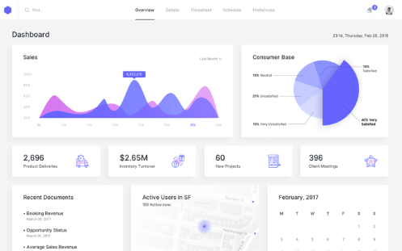

MAIC uses deep reinforcement learning to analyze user behaviour and engagement patterns on web pages in real-time. It learns the best strategies to optimize for conversion and can even adapt content on the fly.
Marketing teams and companies continue to use A/B testing despite the incredible advances in AI and machine learning frameworks.
Alpha Go Zero was an advanced AI developed to learn Go without human input and with limited data. By merely playing itself it learned how to beat the best players in the world in just a few days. We take AI paradigmn and make it available at scale to marketers. Imagine if your webpage could learn in real-time how to best convert your customers. We MAIC it easy.
Vaughn has been a champion for the Montreal Machine Learning and Data Science ecosystem since 2012. He founded MTL DATA, the largest community of data practitioners in Quebec, and kick-started events like AI FEST and Big Data Week.
Timur PhD. is a highly accomplished machine learning researcher having conducted research supported by IBM, Microsoft and Nvidia. An expert in system architecture design and implementation, his latest project centered around image recognization has been featured in VentureBeat.
Paolo is a software developer, data analyst and a product designer. For nearly a decade he has developed dozens of AI driven products for innovation centres, startups and Fortune 500 companies; some of which has been adopted by Google, HP, Microsoft and many more.